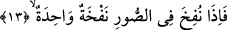

Hz. Ali bir sözünde şöyle der: Ben fıtrat üzere dünyaya geldim, erkenden İslâm’a
girdim ve herkesten önce hicret ettim. Bir rivâyete göre Peygamber Efendimiz (s.a.) Hz.
Ali’nin kulağını tutarak “âyette işâret edilen kulak işte bu kulaktır” demiştir. Bu rivâyeti
en-Nakkaş zikreder.
Her ne kadar nasîhat edenin yüz türlü arzusu varsa da
Öğüt almak için önce işiten bir kulak gerekir
Gaybden haber alan kulaklar olmasaydı
Hiçbir müjdeleyici gökten vahiy getiremezdi.
Bâzı âlimlerin ifâdesine göre âyette işâret edilen kulak, Allah’ın ezelde hitâbını
işittirdiği kulaklardır. Bunlar belleyen kulaklardır. Kendilerine hak olarak yapılan bütün
hitâbı ezberleyen kulaklardır.
Hz. Ebû Hüreyre (r.a.)’a bir gün, “Sen ne kadar çok hadis rivâyet ediyorsun. Senin
dışındakiler ise senin kadar rivâyet edemiyorlar, bunun sebebi nedir?” diye sorulur. O
şöyle cevap verir: “Muhâcirler ve Ensar kendi mallarıyla ve işleriyle meşgul olurlarken
ben zavallı bir fakir olarak Peygamberimiz (s.a.)’den ayrılmazdım. Günlük azığım ile
kanâat ederdim. Peygamberimiz (s.a.) bir gün «Bir kimse ben sözümü bitirene kadar
elbisesini yayar sonra toplarsa benim her söylediğimi öğrenecektir» buyurdu. Ben de
üzeri siyah-beyaz çizgili elbisemi yaydım o sözünü bitirinceye kadar göğsüm üzerine
topladım. İşte o andan itibâren Peygamber Efendimiz’in hiçbir sözünü unutmadım.” Bu
ifâde güzel sözün karşı tarafta etkili olacağına, muhataba fayda vereceğine işâret
etmektedir. Yoksa Ebû Hüreyre’nin duyduklarını ezberlemesi için Peygamber (s.a.)’in
ona -tıpkı Hz. Ali’ye yaptığı gibi- sâdece duâ etmesi yeterli olurdu.
13. Sur’a bir üfürüş üfürüldüğü zaman,
“Sur’a bir üfürülüş üfürüldüğü zaman..” Bu ifâde ile, kıyâmeti yalan sayanların
helâk edilmesi sûretiyle şanının büyüklüğünün beyân edilmesinin ardından bizzat
kıyâmetin kendisinin beyân edilmesine ve nasıl kopacağının açıklanmasına başlanıyor.
Üfürülmek şeklinde tercüme edilen “nefh” insanın nefesi/havayı ağzından dışarıya
göndermesi demektir. Âyette yer alan “sûr”, Allah’ın emriyle İsrafil’in içine üfürecek
olduğu, göklerden daha geniş nurdan boynuzdur. Sûra üfürüldüğü zaman öyle bir büyük
ses meydana getirir ki insanlar bu sesi duyduklarında çığlık atarlar ve sonra -Allah’ın
dilediği kimseler hâriç- derhal ölürler.
Arapça dilbilgisi kurallarına göre -âyette de yer aldığı üzere- müphem olan masdarlar
her ne kadar fâilin yerine gelemezler ise de ifâdeyi pekiştirmek için getirilirler.